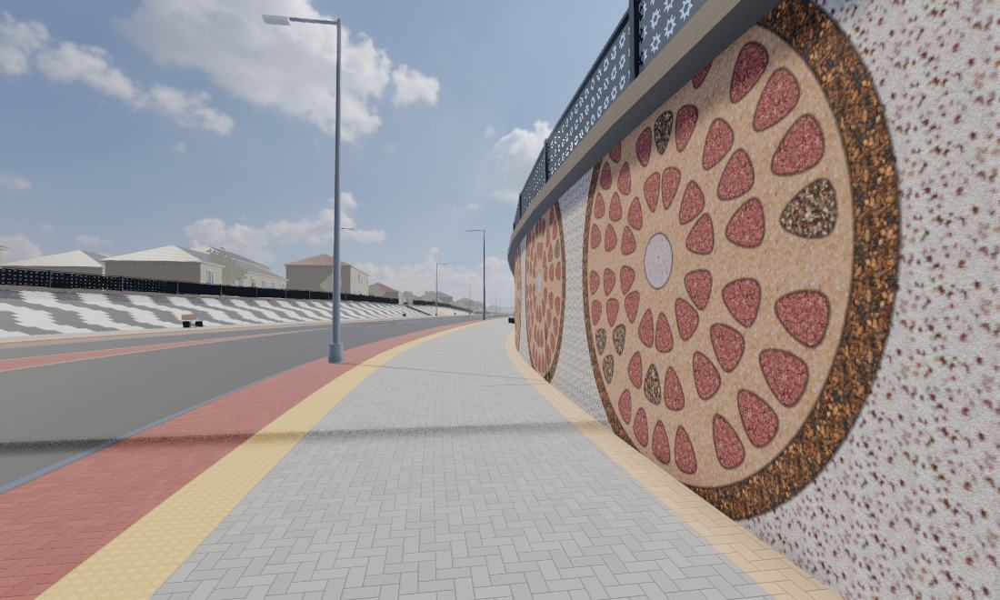
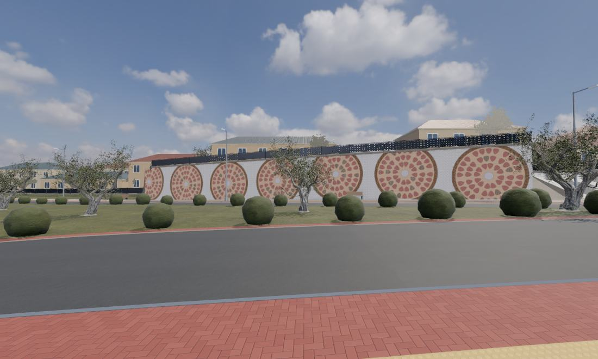
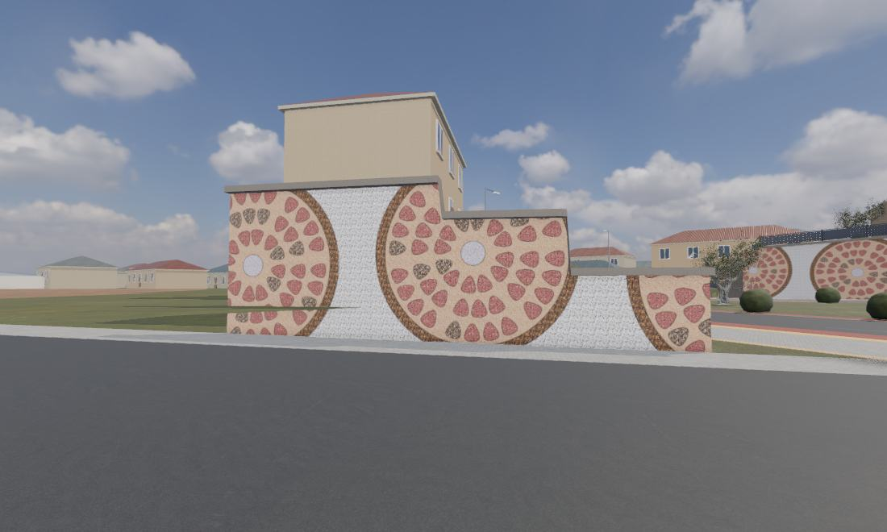
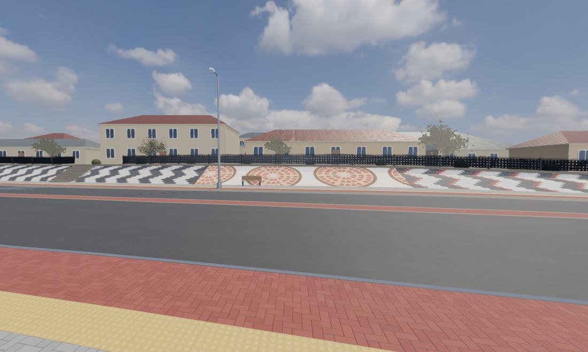
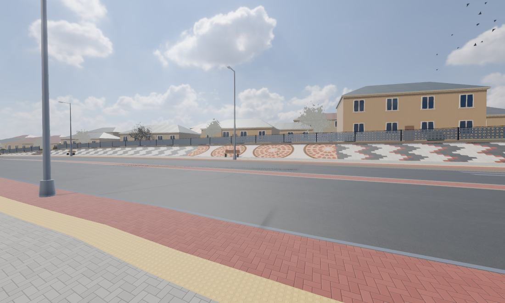
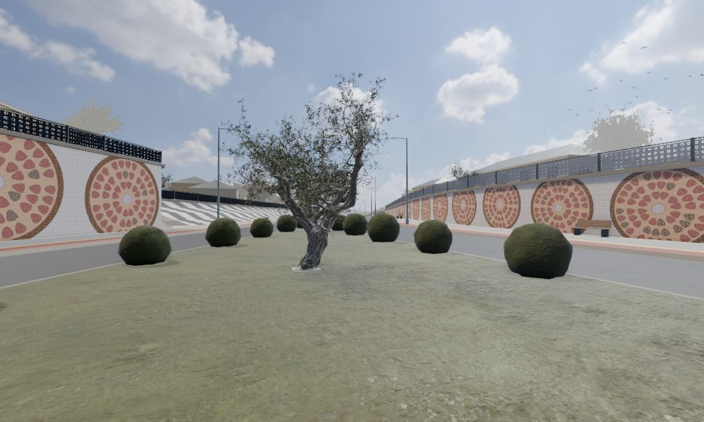

Самарканд · маршрут по объекту
Шесть остановок на кадрах из 3D-прогулки.
Длинная стена

Высокая стена

Ступенчатая стена

Откос, 68 м²

Откос, 52 м²

Середина дороги

Шесть остановок на кадрах из 3D-прогулки.





